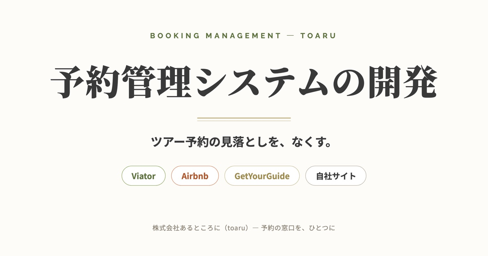
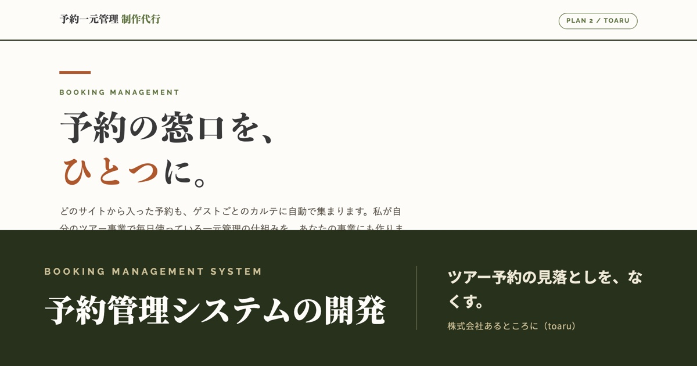
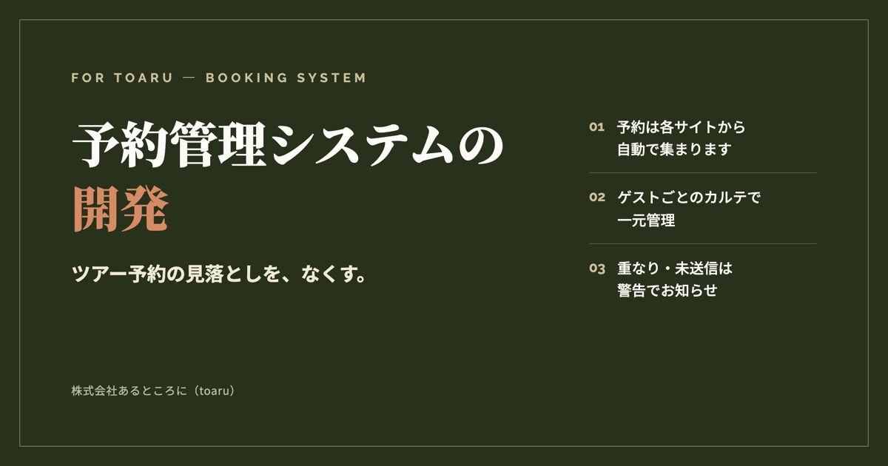
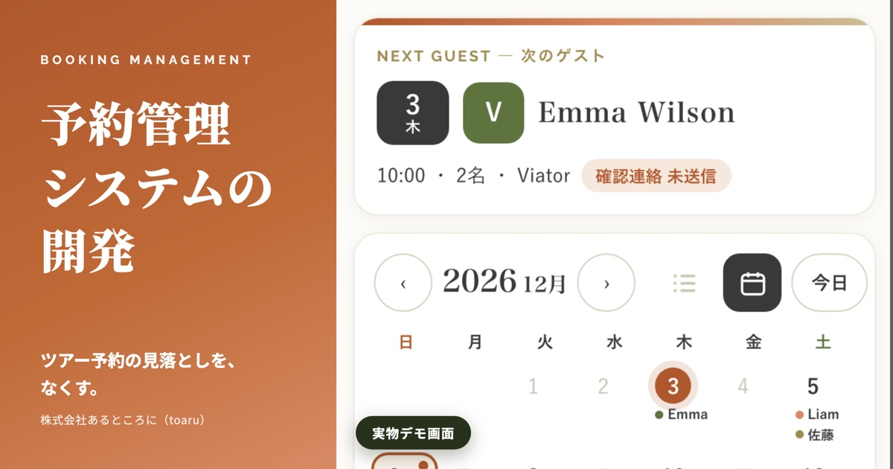

1
実画面ミックス型
左にタイトル、右に実物デモ画面（カレンダー）を大きく見せる王道レイアウト。

2
タイポグラフィ型
文字だけで魅せる中央組み。対応チャネル（Viator／Airbnb／GetYourGuide／自社サイト）のチップ付き。

3
LPヒーロー型
LPのトップ画面（「予約の窓口を、ひとつに。」）をそのまま使い、下のダーク帯にタイトルを載せる。

4
ダーク・モス型
深いモス色に金の細枠。右に3つの特長を並べた、格調のある全面ダーク案。

5
テラコッタ帯型
左のテラコッタ帯にタイトルを縦に組み、右に実物デモ画面を全面表示。「実物デモ画面」のチップ付き。
